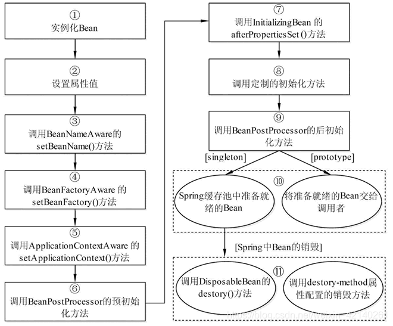

Spring注解
@Bean注解的使用和详解
简单来说，Bean就是一个对象，只不过这个对象是由Spring容器来初始化，装配，管理的，
@Bean 基础概念
- @Bean：Spring的@Bean注解用于告诉方法，产生一个Bean对象，然后这个Bean对象交给Spring管理。产生这个Bean对象的方法Spring只会调用一次，随后这个Spring将会将这个Bean对象放在自己的IOC容器中；
- SpringIOC 容器管理一个或者多个bean，这些bean都需要在@Configuration注解下进行创建，在一个方法上使用@Bean注解就表明这个方法需要交给Spring进行管理；
- @Bean是一个方法级别上的注解，主要用在@Configuration注解的类里，也可以用在@Component注解的类里。添加的bean的id为方法名；
- 使用Bean时，即是把已经在xml文件中配置好的Bean拿来用，完成属性、方法的组装；比如@Autowired , @Resource，可以通过byTYPE（@Autowired）、byNAME（@Resource）的方式获取Bean；
- 注册Bean时，@Component , @Repository , @ Controller , @Service , @Configration这些注解都是把你要实例化的对象转化成一个Bean，放在IoC容器中，等你要用的时候，它会和上面的@Autowired , @Resource配合到一起，把对象、属性、方法完美组装；
- @Configuration与@Bean结合使用：@Configuration可理解为用spring的时候xml里面的标签，@Bean可理解为用spring的时候xml里面的标签；
@Bean注解的源代码
1 |
|
@Bean的属性：
- value：bean别名和name是相互依赖关联的，value,name如果都使用的话值必须要一致；
- name：bean名称，如果不写会默认为注解的方法名称；
- autowire：自定装配默认是不开启的，建议尽量不要开启，因为自动装配不能装配基本数据类型、字符串、数组等，这是自动装配设计的局限性，并且自动装配不如依赖注入精确；
- initMethod：bean的初始化之前的执行方法，该参数一般不怎么用，因为完全可以在代码中实现；
- destroyMethod：默认使用javaConfig配置的bean，如果存在close或者shutdown方法，则在bean销毁时会自动执行该方法，如果你不想执行该方法，则添加@Bean(destroyMethod=””)来防止出发销毁方法；
- 如果发现销毁方法没有执行，原因是bean销魂之前程序已经结束了，可以手动close下如下：
1
2
3
4
5AnnotationConfigApplicationContext applicationContext2 = new AnnotationConfigApplicationContext(MainConfig.class);
User bean2 = applicationContext2.getBean(User.class);
System.out.println(bean2);
//手动执行close方法
applicationContext2.close();Bean的生命周期
Spring 容器可以管理 singleton 作用域 Bean 的生命周期，在此作用域下，Spring 能够精确地知道该 Bean 何时被创建，何时初始化完成，以及何时被销毁。
而对于 prototype 作用域的 Bean，Spring 只负责创建，当容器创建了 Bean 的实例后，Bean 的实例就交给客户端代码管理，Spring 容器将不再跟踪其生命周期。每次客户端请求 prototype 作用域的 Bean 时，Spring 容器都会创建一个新的实例，并且不会管那些被配置成 prototype 作用域的 Bean 的生命周期。
了解 Spring 生命周期的意义就在于，可以利用 Bean 在其存活期间的指定时刻完成一些相关操作。这种时刻可能有很多，但一般情况下，会在 Bean 被初始化后和被销毁前执行一些相关操作。
在 Spring 中，Bean 的生命周期是一个很复杂的执行过程，我们可以利用 Spring 提供的方法定制 Bean 的创建过程。
当一个 Bean 被加载到 Spring 容器时，它就具有了生命，而 Spring 容器在保证一个 Bean 能够使用之前，会进行很多工作。Spring 容器中 Bean 的生命周期流程如图 1 所示。

Bean 生命周期的整个执行过程描述如下。
1）根据配置情况调用 Bean 构造方法或工厂方法实例化 Bean。
2）利用依赖注入完成 Bean 中所有属性值的配置注入。
3）如果 Bean 实现了 BeanNameAware 接口，则 Spring 调用 Bean 的 setBeanName() 方法传入当前 Bean 的 id 值。
4）如果 Bean 实现了 BeanFactoryAware 接口，则 Spring 调用 setBeanFactory() 方法传入当前工厂实例的引用。
5）如果 Bean 实现了 ApplicationContextAware 接口，则 Spring 调用 setApplicationContext() 方法传入当前 ApplicationContext 实例的引用。
6）如果 BeanPostProcessor 和 Bean 关联，则 Spring 将调用该接口的预初始化方法 postProcessBeforeInitialzation() 对 Bean 进行加工操作，此处非常重要，Spring 的 AOP 就是利用它实现的。
7）如果 Bean 实现了 InitializingBean 接口，则 Spring 将调用 afterPropertiesSet() 方法。
8）如果在配置文件中通过 init-method 属性指定了初始化方法，则调用该初始化方法。
9）如果 BeanPostProcessor 和 Bean 关联，则 Spring 将调用该接口的初始化方法 postProcessAfterInitialization()。此时，Bean 已经可以被应用系统使用了。
10）如果在 中指定了该 Bean 的作用范围为 scope=“singleton”，则将该 Bean 放入 Spring IoC 的缓存池中，将触发 Spring 对该 Bean 的生命周期管理；如果在 中指定了该 Bean 的作用范围为 scope=“prototype”，则将该 Bean 交给调用者，调用者管理该 Bean 的生命周期，Spring 不再管理该 Bean。
11）如果 Bean 实现了 DisposableBean 接口，则 Spring 会调用 destory() 方法将 Spring 中的 Bean 销毁；如果在配置文件中通过 destory-method 属性指定了 Bean 的销毁方法，则 Spring 将调用该方法对 Bean 进行销毁。
Spring 为 Bean 提供了细致全面的生命周期过程，通过实现特定的接口或 的属性设置，都可以对 Bean 的生命周期过程产生影响。虽然可以随意配置 的属性，但是建议不要过多地使用 Bean 实现接口，因为这样会导致代码和 Spring 的聚合过于紧密。
Springboot依赖注入Bean的三种方式
首先明确Java变量的初始化顺序：静态变量或静态语句块–>实例变量或初始化语句块–>构造方法–>@Autowired->@PostConstruct(注释的方法)
1 | public class MyService{ |
在上面的示例中，MyService类使用了三种不同的方式来注入 MyDependency依赖。
@Resource
@Resource注解是Java标准库提供的一种依赖注入方式，因此它可以与Java SE和Java EE应用程序一起使用，不仅限于Spring框架。根据规范，@Resource注解默认按照字段或方法参数的名称进行依赖的匹配，也可以通过name属性指定特定的依赖名称。
下面是几种常见的使用方式：
1 | //字段注入： |
@Autowired
@Autowired注解是Spring Framework提供的一种依赖注入方式。@Autowired支持按照类型、名称和限定符等方式进行依赖的解析和注入Injection。
1 | //字段注入： |
优点
- 代码少，简洁明了。
- 新增依赖十分方便，不需要修改原有代码
缺点
- 容易出现空指针异常。Field 注入允许构建对象实例时依赖的对象为空，导致空指针异常不能在启动时就爆出来，只能在用到它时才发现。空指针异常不是必现的，与bean的实例化顺序有关。有时，把依赖的bean改个名字就会报空指针异常。
- 会出现循环依赖的隐患。
@Autowired与@Resource的区别
- 来源和依赖关系：@Autowired是Spring特有的注解，用于实现Spring的依赖注入机制。它通过类型匹配来解析依赖关系。而 @Resource是Java标准库中的注解，它可以与Java SE和Java EE应用程序一起使用，不仅限于Spring框架。@Resource通过名称匹配来解析依赖关系。
- 配置方式：@Autowired注解通常与 @Component、@Service等Spring注解一起使用，通过组件扫描和自动装配来实现依赖注入。而 @Resource注解不需要特定的配置，它可以直接用于字段、方法和构造函数上。
- 名称匹配规则：@Autowired注解默认按照类型进行依赖的匹配。如果存在多个匹配的Bean，可以使用 @Qualifier注解指定特定的Bean名称或限定符。而 @Resource注解默认按照名称进行依赖的匹配，也可以通过 name属性指定特定的依赖名称。
- Null处理：当无法找到匹配的依赖时，@Autowired注解的字段或方法参数可以为 null，而 @Resource注解要求必须找到匹配的依赖，否则会抛出异常。
需要注意的是，尽管 @Autowired和 @Resource有一些区别，但在大多数情况下，它们可以互换使用。
priavet final
在Spring Boot中，对于 private final字段的自动注入，Spring使用构造函数注入Constructor Injection）来实现。当一个Bean有一个或多个 private final字段需要注入时，Spring会尝试在容器中查找与这些字段类型匹配的Bean，并使用构造函数注入来实例化Bean对象。
需要注意的是，由于private final字段是不可变的，一旦注入后就无法修改。这种不可变性有助于确保字段的安全性和线程安全性。
1 | class test{ |
上面这段代码能不能正常执行呢？
答案是不阔能，按照上面的初始化顺序，执行构造方法时，person里面是没有内容的，所以执行上面的那段代码会出现 java.lang.NullPointerException。
解决方案是使用 priavet final注解，这样就可以明确变量注入时的加载顺序。
1 | class test{ |
这样有如下两个优点：
- 这样当test类创建的时候，强制依赖person对象，确保创建每个test对象的对象都是有效状态
- 构造器中可以添加对象初始化的校验逻辑
注意：不能提供无参构造方法，否则Springboot默认会加载无参的构造方法，Bean实例对象会为null
@RequiredArgsConstructor
@RequiredArgsConstructor会将类的每一个final字段或者non-null字段生成一个构造方法。自动生成包含final字段的构造函数的代码，以便将final字段绑定到具体实现。